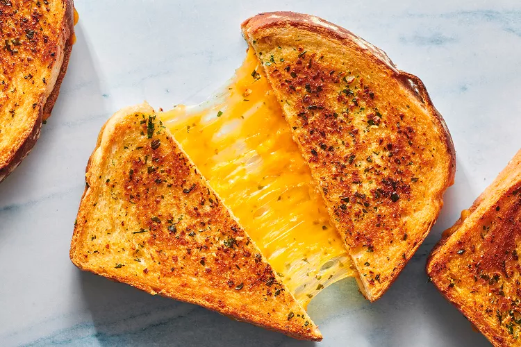

Toasted cheese sandwich.

Description:
Toast sandwich with cheese. A lunchbox favourite.Serves 1.
Ingredients:
- Four slices of your preferred bread
- Butter
- Cooking oil
- Non-stick spray
- Salt and pepper
- Cheddar cheese
- Tomato
- 2 eggs
Method:
- Add a tablespoon of cooking oil to a pan and fry the 2 eggs on a stovetop.
- Add salt and pepper to the fried eggs and place them aside.
- Cut up a tomato into slices.
- Spread all 4 slices of bread with butter.
- Grate about 300g of cheddar cheese and add to 2 slices of the bread.
- Add the fried egg and tomato onto the cheese and finally add the other 2 slices on top.
- Toast the sandwich in a triangle toaster.Make sure the toaster is first sprayed with a non-stick spray.
Home page